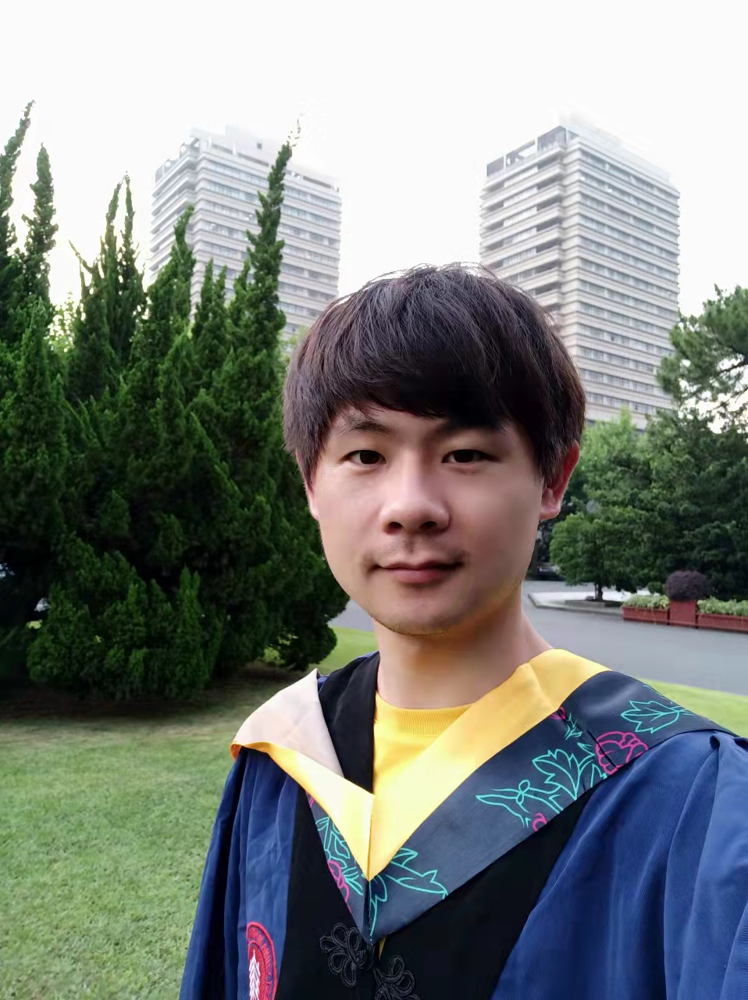

Cheng He (贺成)
|  | Cheng He, M.Sc Student Shanghai Key Laboratory of Trustworthy Computing（上海市高可信计算重点实验室） School of Computer Science and Software Engineering East China Normal University(ECNU) Address: B1008, Science Building, East China Normal University, No.3663, North Zhongshan Road, 200062 Shanghai, P.R. China Email: chenghe28@qq.com |
|

Biography
Currently I am a second year graduate student of School of Computer Science and Software Engineering in East China Normal University. I received my B.Sc. degree in the School of Computer Science and Technology in June 2016 from Nantong University.
Latest news!
I have received my M.Sc. degree in School of Computer Science and Software Engineering(now renamed School of Software Engineering) in June 2020 from East China Normal University, and join Baidu as an algorithm engineer.
Education and Experience
Algorithm Engineer(Recommendation and Advertising), Baidu Inc, July, 2020 - Now
M.Sc, School of Computer Science and Software Engineering, East China Normal University, Sep., 2017 - June, 2020, (First Place in Unified National Graduate Entrance Examination, 学硕考研成绩第一名)
Advisor: Associate Professor Dr. Chao Peng, the lab homepage
Research Interests: Social Media Mining
B.Sc, School of Computer Science and Technology, Nantong University, Sep., 2012 - June, 2016, (overall rank: 1/58)
Advisor: Associate Professor Dr. Xiang Chen
Research Interests: Software Defect Prediction, Feature Selection, Class-imbalance Learning
Publications
[KSEM-2020] CIFEF: Combining implicit and explicit features for friendship inference in location-based social networks. Cheng He, Chao Peng, Na Li, Xiang Chen, Zhengfeng Yang and Zhenhao Hu
In Proceedings of The 13th International Conference on Knowledge Science, Engineering and Management (KSEM 2020). 2020, 168-180. (CCF C) , Link, Acceptance Rate: 19.9%(58/291)[IJCNN-2020] IO-aware Factorization Machine for User Response Prediction. Zhenhao Hu, Chao Peng, Cheng He and Haibin Cai. In 2020 International Joint Conference on Neural Networks (IJCNN 2020), July 2020. (CCF C) , link
[PRICAI-2018] Exploiting Spatiotemporal Features to Infer Friendship in Location-based Social Networks. Cheng He, Chao Peng, Na Li, Xiang Chen, Lanying Guo
In Proceedings of The 15th Pacific Rim International Conference on Artificial Intelligence (PRICAI 2018).2018, 395-403. (CCF C), Link[计算机应用研究] HFS：一种面向软件缺陷预测的混合特征选择方法. 陈翔，贺成*，王宇，管怀文. 计算机应用研究，2016，33（6）：1758-1761.（中文核心）(本科三年级时发表) ，link
Blog and Github
My Blog: link
My Github: link
Awards and Competitions
研究生国家奖学金，2018
华东师范大学2017-2018年度优秀学生，2018
第十五届中国研究生数学建模竞赛全国三等奖，2018
南通大学优秀毕业设计（论文）团队，2016
江苏省优秀毕业设计（论文）团队，2017
第六届中国大学生服务外包创新创业大赛全国二等奖（rank: 36/180），2015
第八届中国大学生计算机设计大赛全国三等奖，2015
第五、六届“蓝桥杯”全国程序设计大赛（C/C++）江苏赛区二等奖，2014,2015
南通大学一等奖学金，2015
南通大学二等奖学金，2013,2014